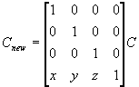

#include <nitro/gx/g3imm.h>
#include <nitro/gx/g3b.h>
#include <nitro/gx/g3c.h>
void G3_Translate(fx32 x, fx32 y, fx32 z);
// Below are APIs for creating the display list (command list)
void G3B_Translate(GXDLInfo* info, fx32 x, fx32 y, fx32 z);
void G3C_Translate(GXDLInfo* info, fx32 x, fx32 y, fx32 z);
void G3BS_Translate(GXDLInfo* info, fx32 x, fx32 y, fx32 z);
void G3CS_Translate(GXDLInfo* info, fx32 x, fx32 y, fx32 z);| info | Command List Information |
| x | Distance to move along x-axis |
| y | Distance to move along y-axis |
| z | Distance to move along z-axis |
None.
This function multiplies the current matrix on the left by the Parallel Translation matrix, as shown below. Each element of the matrix is a signed fixed-point number (sign + 19-bit integer + 12-bit decimal). If the current matrix is C, then the new matrix, Cnew, is in the format shown below.

The G3OP_MTX_TRANS command normally requires 22 cycles, and with the Position&Vector mode it requires 52 cycles for an execute cycle. It is possible to process it effectively without using the G3OP_MTX_TRANS command by making a set with the multiplication of a 3x3 matrix. The same process is done with G3*_MultTransMtx33.
struct {
MtxFx33 mtx;
VecFx32 trans;
} mtx43;
G3*_MultMtx43( (MtxFx43*)(&mtx43) );
G3*_MtxMode, G3*_Identity, G3*_LoadMtx43, G3*_LoadMtx44, G3*_MultMtx43, G3*_MultMtx44, G3*_MultMtx33, G3*_MultTransMtx33, G3*_PushMtx, G3*_PopMtx, G3*_StoreMtx, G3*_RestoreMtx, G3*_Scale, G3*_MultTransMtx33
07/26/2004 Added description on boosting speed by packing with the 3x3 matrix multiplication.
01/19/2004 Initial version.
CONFIDENTIAL